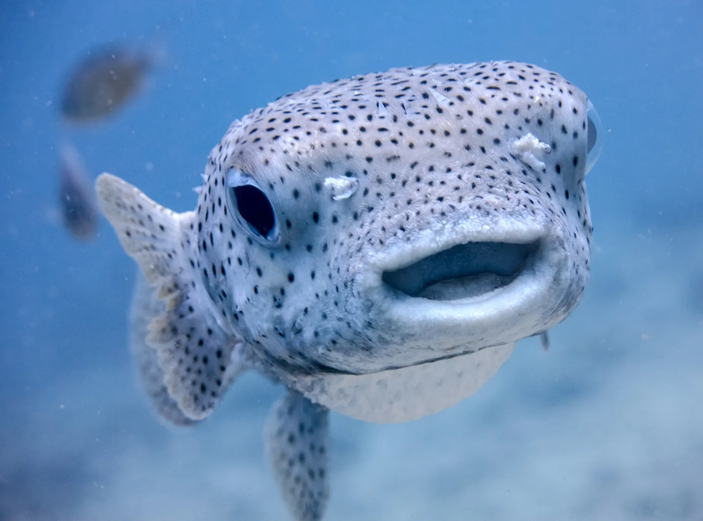

Getting Started
Fishkeeping is a fun hobby that involves caring for fish and maintaining an aquarium. Before getting fish, it is important to understand their tank size, water conditions, and basic care needs.

Choosing the Right Fish
Different fish have different needs. Some fish need larger tanks, while others can live in smaller aquariums. Researching a fish before buying it can help keep it healthy.
Learn More About Fish Care